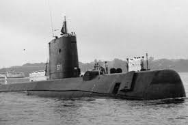
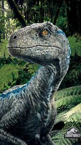
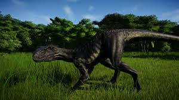
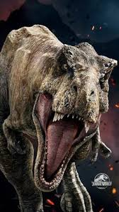
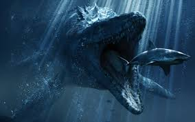
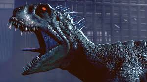

La Indominus es un dinosaurio terápodo híbrido transgénico y única especie de su género (crearon dos, pero ella mató a su hermana). La especie consistió de una hembra creada mediante ingeniería genética por el dr. Henry Wu
Muestra características mezcladas de una amplia gama de animales, debido a los genes estructurales que provienen de muchas especies diferentes. Su cabeza muestra claramente la influencia de especies de abelisáuridos y carcharodontosáuridos, con sus pequeños cuernos supraorbitarios cónicos y escamas decorativas en particular provenientes de su herencia abelisáurida. La forma del cráneo está determinada por los genes del Tyrannosaurus y Carcharodontosaurus en su genoma; los dientes, que son 74, son de apariencia cónica debido a la inclusión de ADN de cocodrilo; el sub-adulto visto en 2015 mostró una serie de dientes rotos o dañados que sobresalían en varios ángulos. Sus dientes miden 25 centímetros
Escamas redondeadas cubren gran parte del cuerpo del animal, lo que le brinda una protección decente contra la mayoría de los ataques. Las escamas más grandes son visibles en las regiones del cuello y la espalda, pero su piel escamosa es bastante gruesa en todas partes, lo que hace que el Indominus sea casi impenetrable. Su característica anatómica más notable, además de sus enormes mandíbulas, son sus extremidades anteriores.
Las patas de Indominus también son muy poderosas y terminan en pies de tres dedos que también tienen grandes garras. A diferencia de sus parientes genéticos, carece de una garra raptorial agrandada. Es capaz de correr a treinta millas por hora cuando se encuentra en un área confinada. Si bien es un cuadrúpedo facultativo, el Indominus adopta una postura bípeda para desplazarse a mayor velocidad, de manera similar a Scorpius pero al contrario que Indoraptor. Su cola es larga, pero bastante anodina. Según el Dr. Henry Wu, el arquitecto del genoma de Indominus, el animal podría alcanzar los quince metros de alto y de largo veinte metros
|  |
 |
 |
 |
 |
 |